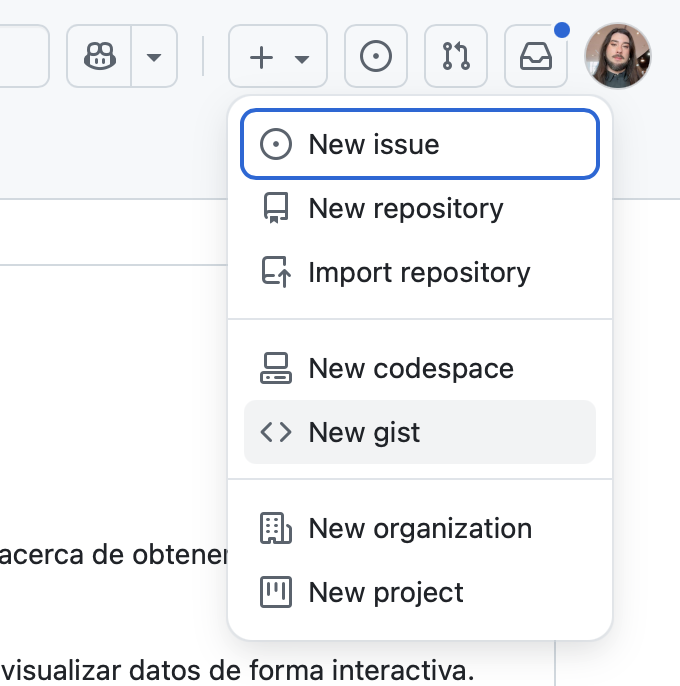
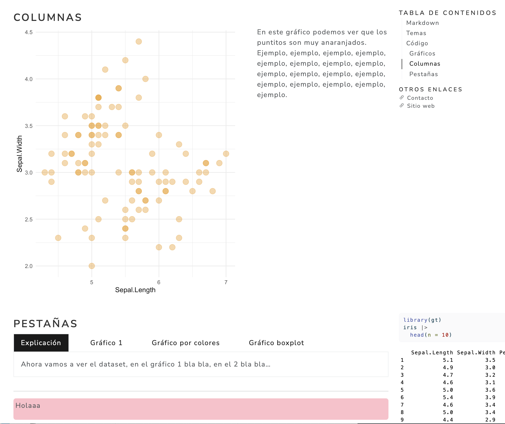
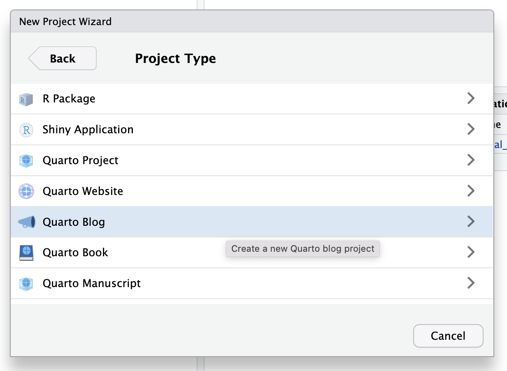
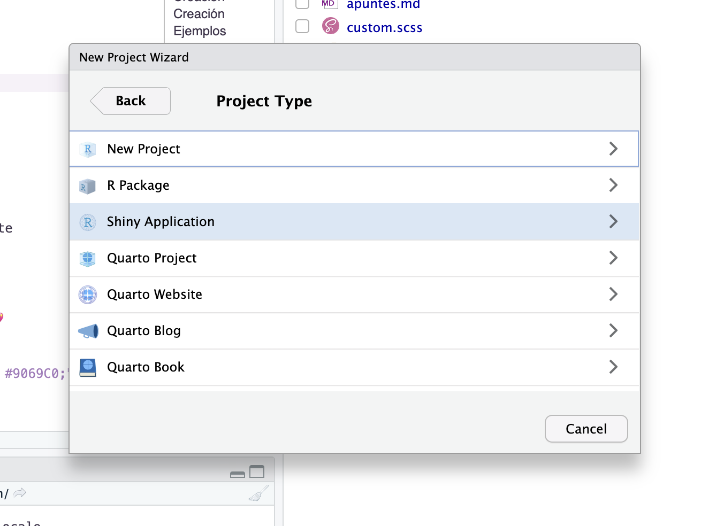
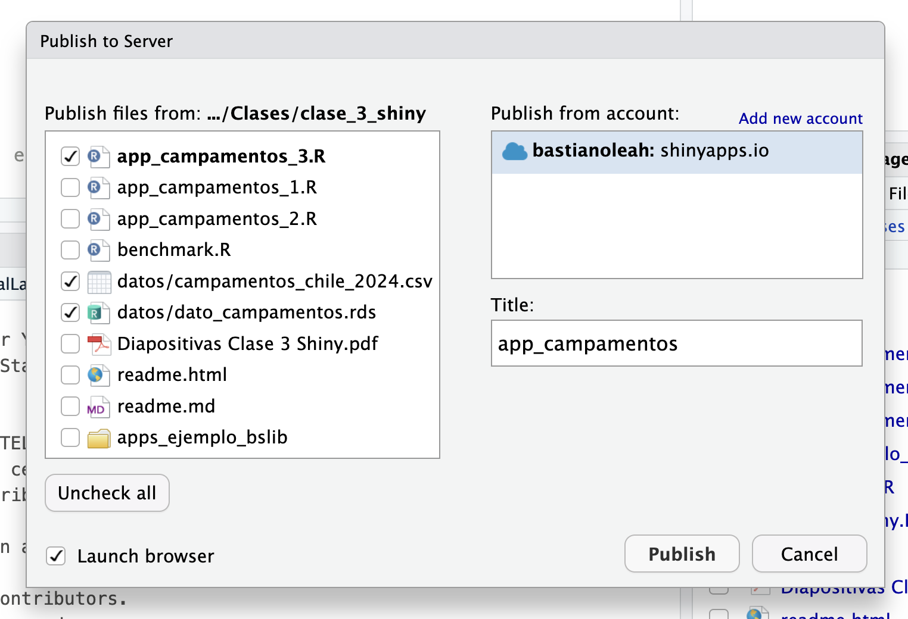

Compartir y colaborar desde el cruce entre las ciencias de datos y sociales
Diplomado de Ciencia de Datos para Ciencias Sociales y Humanidades
Temario
- Mi experiencia con el análisis de datos desde la sociología
- Revisar algunos de mis proyectos de análisis de datos con R
- Principios para guiarnos:
- Crear
- Diferenciarse
- Compartir
- Consejos prácticos para lograrlo ♥
Trayectoria
Portafolio
Aplicaciones desarrolladas en R y {shiny} centradas en visualización de datos públicos
Aplicaciones
Página web para presentar mis aplicaciones.
Página creada en R con Quarto y hosteada en GitHub Pages.
Sitio web
Sitio web sobre contenido de R, principalmente guías, tutoriales y recomendaciones
Blog de R
Blog donde puedo compartir cosas que aprendo, consejos para los demás, y guías para invitar a que más gente use estas herramientas.
Repositorio de datos
- Otra página web donde voy manteniendo un repositorio de datos sociales que he usado para otros proyectos.
- La idea es recolectar todo en un mismo lugar para facilitar el acceso a datos.
- Cada proyecto contiene datos limpios/procesados, código abierto para procesar y explorar los datos, y ejemplos de visualización asociados.
Esta página también fue creada en R con Quarto, principalmente con una tabla hecha con el paquete {gt}, y hosteada en GitHub Pages.
Creación
Creación
- Desarrollar temas de su experticia, campo o disciplina üî¨
- Abordar temas de relevancia social ‚úäüèº
- Hacer públicos estudios o investigaciones acad√©micas üìù
- Explorar repositorios de datos públicos
- Reutilización de datos públicos ♻️
- Participar de TidyTuesday üåé
- Latin R, presentar trabajos hasta el 25 de agosto
Siempre va a haber gente interesada! ☺️
Ejemplos
Portal de reutilización del sitio de Datos Abiertos del Gobierno de Chile
Visualizador de datos de proyecciones de población del Censo, Chile
Diferenciación
Diferenciación
- Abordar temáticas de forma inclusiva a todo público
- Preocuparse por la apariencia de los productos!
- Gráficos
{ggplot2}con temas de colores con{thematic}y tipografías con{showtext} - Aplicaciones
{shiny}con temas de colores con{bslib} - Atenci√≥n a las tipograf√≠as: pares tipográficos Ô∏è‚úíÔ∏èüíé
- Selecci√≥n de paletas de colores llamativas y con personalidad üíÖü躂ú®
Tipografías
- fonts.google.com, tipografías de Google
- fontpair.co, pares de tipografías
Gráficos de {ggplot2} con tipografías personalizadas:
Colores
Gráficos {ggplot2} con temas de colores:
Recursos para encontrar colores:
- HTML Color Picker
- pigment.shapefactory.co, paletas de colores
- 2colors.colorion.co, pares de colores
- realtimecolors.com, simulador de interfaz web con paletas de colores
Compartir
Compartir
Diagn√≥stico: estado actual de la internet üòï
- Lugares para hacer comunidad: Bluesky, redes sociales
- Participar de Stack Overflow
- Comunidades de R, grupos RLadies
- ¬øCrear tu propia comunidad? üê£
Crear
- Crear repositorios en GitHub con
{usethis}üì¶ - Archivos
readme.mdpara documentar y ofrecer contexto - Subir c√≥digo suelto a Gists de GitHub üóíÔ∏è
- Compartir c√≥digo en redes sociales ü§ì
- Herramientas para crear pantallazos üì∏
Compartir códigos breves
GitHub Gists
Una forma rápida de subir pedazos de código para poder compartirlo


Crear un repositorio en GitHub
Crear un repositorio local para tu código:
Configurar GitHub:
Subir tu repositorio local a GitHub, creando un espejo de tu código en el repositorio remoto:
Revisa el tutorial completo aquí!
Crear un archivo readme.md
Crea un archivo de texto Markdown (extensión .md) para explicar al mundo de qué se trata tu repositorio!
Titulares:
Estilos de texto:
Imágenes:
En cierta forma es como una página web muy básica ü•∫
Crear
Crear un lugar, volverse encontrable
- Crear documentos Quarto para compartir resultados hechos con R üìÑ
- Subir documentos Quarto a GitHub pages, tu propia página web estática para tu proyecto üöÄ
- Crear un blog con Quarto, el paso siguiente para construir tu presencia en la web ü§©
- Blog Hugo, una alternativa más rápida pero menos personalizable üå∑
- Dominio Rbind.io para darle el toquecito neRd üßê
- Crea aplicaciones web interactivas con Shiny y súbelas a la web rápido y gratis ü™ê
Quarto
Crea documentos que mezclen texto, código y gráficos desde R.
Vista desde RStudio 
Ejemplo de un reporte 
Revisa el tutorial de Quarto aquí!
GitHub Pages
- Subir documento Quarto a un repositorio GitHub
- Crear un archivo
_quarto.yml:
- Creamos un archivo vacío llamado
.nojekyll - Subir cambios del repositorio local al repositorio remoto en GitHub
GitHub Pages
- Entra a la pestaña Settings del repositorio remoto:
GitHub Pages
- Entra a Pages, elige la rama y elige
/docs

Revisa el tutorial completo aquí!
Blog Quarto
- Crear un nuevo proyecto desde RStudio usando Quarto Blog:

- Listo! Se crea un blog Quarto, puedes agregar publicaciones en
posts

Blog Quarto
Para subirlo a GitHub Pages es similar a las instrucciones anteriores:
- En
_quarto.ymlagregamosoutput-dir: docsdebajo deproject:. - En el proyecto, creamos un nuevo archivo vacío que se llame
.nojekyll - Le damos Render al documento
index.qmdo en la pestaña Terminal ejecutamosquarto render - Creamos un repositorio git con
usethis::use_git() - Subimos el repositorio a GitHub con
usethis::use_github() - En GitHub, entramos a Settings, luego a Pages, y configuramos el repositorio para que genere la página desde
/docs
Elige un tema desde la documentacion y aplícalo en _quarto.yml.
Revisa el tutorial completo aquí!
Blog Hugo

Hugo es una plataforma para crear blogs en base a Markdown y el lenguaje de programación Go. Gracias al tema Hugo Apéro se puede crear un blog elegante y funcional desde R en pocos pasos.
Instalar {blogdown} e instalar Hugo:
Instrucciones detalladas disponibles en este blog.
Blog Hugo
Creamos el blog con la siguiente función:
Para ver el sitio ejecutamos blogdown::serve_site()
Tenemos la función blogdown::new_post() crear un nuevo post:
Blog Hugo
Instrucciones para subir el blog a internet:
- Creamos un repositorio git con
usethis::use_git() - Subimos el repositorio a GitHub con
usethis::use_github() - Entrar a Netlify y el Projects, seleccionar Add new project
- Elegir el repositorio de GitHub que creamos, dejar todo como está y poner Deploy Site
- En
config.toml, cambiarbaseURLpor la dirección del sitio subido (del paso anterior). Subir este cambio a GitHub. - Revisar con
blogdown::config_netlify()y luegoblogdown::check_netlify()
Blog Hugo
Como Hugo usa Markdown y no Quarto, si queremos crear documentos .qmd que usen los resultados del código de R, debemos agregar lo siguiente al encabezado de cada post:
Shiny
Para crear una aplicación Shiny, creamos un nuevo proyecto y elegimos Shiny Application.

Revisa un mini tutorial aquí.
Desde el mismo panel de RStudio puedes publicar tu aplicación a ShinyApps.io con el botón Publish.

Guía para subir tu app en este tutorial!
Consejos
- Crea cosas que te sirvan, que te conecten, y que sean socialmente relevantes
- Escribe bocetos ‚úçüèº
- Escribe todo lo que aprendes! üìí
- Trata de dar de vuelta lo que has recibido üíñ
Gracias ♥
Puedes escribirme cualquier duda o comentario por aquí
Bastián Olea Herrera — https://bastianolea.rbind.io